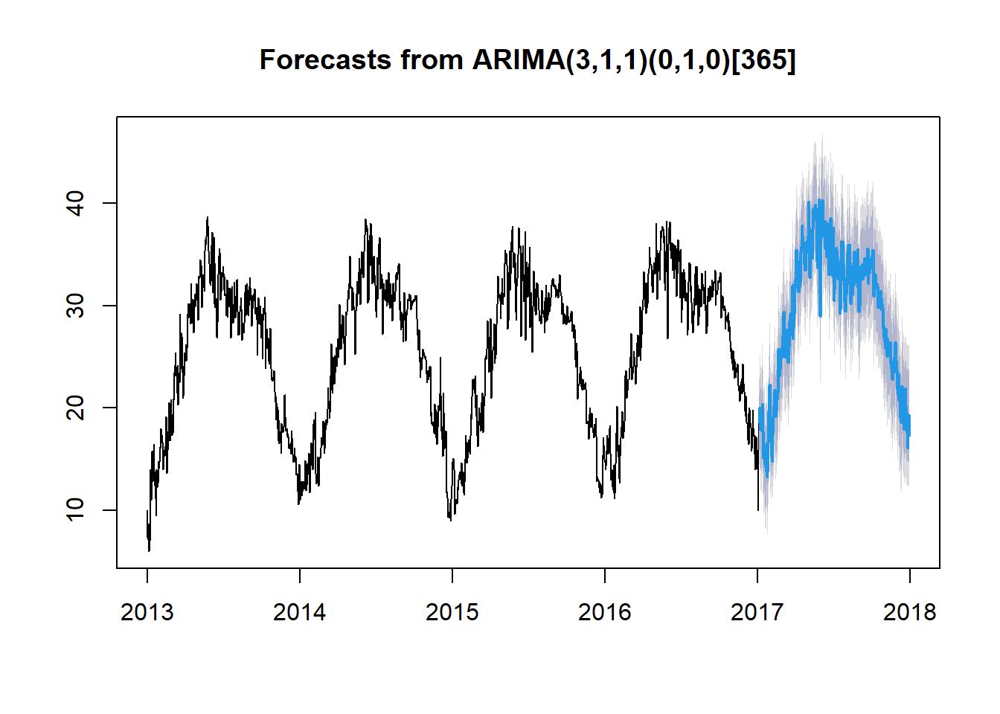

5 Metodología Box-Jenkins y Modelo ARIMA
La metodología Box-Jenkins es un enfoque sistemático ampliamente utilizado en el análisis de series de tiempo, se aplica a los modelos autorregresivos de media móvil ARMA o a los modelos autorregresivos integrados de media móvil (ARIMA) para encontrar el mejor ajuste de una serie temporal de valores, a fin de que los pronósticos sean más acertados.
5.1 Modelo ARIMA
Un modelo ARIMA es una técnica estadística utilizada para analizar y predecir valores futuros en una serie temporal basándose en sus datos históricos.
El modelo ARIMA combina tres componentes esenciales:
AR (AutoRegressive): Captura la dependencia de los valores actuales de la serie con sus valores pasados.
I (Integrated): Involucra la diferenciación de la serie de tiempo para convertirla en estacionaria, eliminando tendencias y variaciones no constantes.
MA (Moving Average): Refleja la relación entre los valores actuales de la serie y los errores de predicción pasados.
El objetivo principal de utilizar la metodología Box-Jenkins y los modelos ARIMA es encontrar la mejor representación matemática de la serie de tiempo para realizar predicciones precisas y confiables.
5.2 Metodología Box-Jenkins
1.Verificación de estacionariedad y diferenciación:
Verificar si la serie de tiempo es estacionaria, lo cual significa que sus propiedades estadísticas, como la media y la varianza, son constantes a lo largo del tiempo.Si la serie es estacional y no es estacionaria, aplicar una diferenciación para hacerla estacionaria (diferenciación estacional, para cierto período, si es necesario).
2.Identificación de p, d, q para el Modelo ARIMA:
Ajustar el modelo ARIMA a la serie de tiempo utilizando técnicas de estimación como la máxima verosimilitud. Esto implica encontrar los mejores valores para los parámetros p,d y q que minimicen los errores de predicción.
3.Validación y análisis de residuos:
Después de ajustar el modelo, es IMPORTANTE evaluar los residuos (errores de predicción). Los residuos deben comportarse como un ruido blanco, es decir, no deben mostrar patrones ni autocorrelación significativa.
4.Uso del modelo ajustado para realizar predicciones:
Una vez validado el modelo, se puede utilizar para predecir valores futuros de la serie de tiempo. Las predicciones se basan en la dinámica interna capturada por el modelo ARIMA, proporcionando estimaciones para períodos futuros.
5.3 Aplicación
Verificación de estacionariedad y diferenciación:
En análisis anteriores de esta serie de tiempo, se aplicó la diferenciación para convertir la serie en estacionaria, teniendo en cuenta la presencia de estacionalidad. Se realizó la prueba de Dickey-Fuller para confirmar la estacionariedad de la serie después de la diferenciación. De esta manera, se cumple el primer supuesto de la metodología Box-Jenkins, que requiere una serie de tiempo estacionaria antes de proceder con el modelado.
5.4 Identificación de p, d, q para el Modelo ARIMA:
# Ajustar el modelo ARIMA automáticamente
fit <- auto.arima(ts_data)
# Resumen del modelo ajustado
summary(fit)## Series: ts_data
## ARIMA(3,1,1)(0,1,0)[365]
##
## Coefficients:
## ar1 ar2 ar3 ma1
## 0.7150 0.0112 -0.0392 -0.9873
## s.e. 0.0311 0.0371 0.0311 0.0084
##
## sigma^2 = 4.597: log likelihood = -2397.96
## AIC=4805.92 AICc=4805.98 BIC=4830.93
##
## Training set error measures:
## ME RMSE MAE MPE MAPE MASE
## Training set 0.01740133 1.853476 1.214827 -0.2674292 5.197467 0.4752757
## ACF1
## Training set 0.002740674El resultado proporcionado por el resumen anterior muestra lo siguiente:
El modelo ajustado se especifica como ARIMA(3,1,1)(0,1,0)[365]. El primer conjunto de números (3,1,1) indica el orden de autoregresión (p), el grado de diferenciación (d), y el orden de la media móvil (q) del componente no estacional del modelo.
El segundo conjunto de números (0,1,0) indica lo mismo para el componente estacional.
El número entre corchetes [365] indica el período estacional, el cual concuerda con el análisis hecho anteriormente.
Los coeficientes estimados para los términos autoregresivos son (ar1, ar2, ar3) y el término de media móvil (ma1) junto con sus errores estándar (s.e.). Estos coeficientes indican cómo los valores pasados de la serie de tiempo afectan a los valores actuales y cómo los errores pasados afectan a los valores actuales.
Se observa el error medio (ME), el error cuadrático medio (RMSE), el error absoluto medio (MAE), el error porcentual medio (MPE), el error porcentual absoluto medio (MAPE), el error de desviación media absoluta (MASE) y el primer coeficiente de autocorrelación (ACF1). Según los valores de estos errores el modelo en general, parece que el modelo ARIMA tiene un buen ajuste a los datos históricos de entrenamiento, ya que los errores son relativamente bajos en comparación con las escalas de las variables.
5.5 Evaluación del modelo:
##
## Ljung-Box test
##
## data: Residuals from ARIMA(3,1,1)(0,1,0)[365]
## Q* = 360.51, df = 289, p-value = 0.002664
##
## Model df: 4. Total lags used: 293- Se observa un valor p bajo (p=0.002664), sugiere que hay evidencia de autocorrelación significativa en los residuos del modelo ARIMA, lo que indica que el modelo puede no estar capturando completamente la estructura de autocorrelación en los datos. Esto sugiere que el modelo podría necesitar ajustes adicionales.
5.6 Uso del modelo para realizar predicciones:
# Predicción de los siguientes 360 dias
forecasted_values <- forecast(fit, h = 360)
# Visualizar las predicciones
plot(forecasted_values)
En general Se ha observa que el pronóstico para un período completo de 365 días aún muestra o mantiene la estacionalidad y pareciera que se adaptara a la serie.
Para obtener un mejor modelo se podria intentar aumentar o variar el orden de los términos autoregresivos, diferenciales o de media móvil en el modelo ARIMA para capturar mejor la estructura de autocorrelación en los datos. Sin embargo, podría existir un riesgo de sobreajustar el modelo.